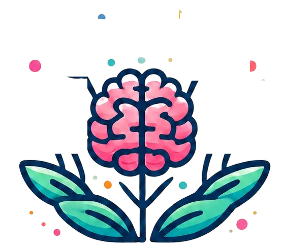
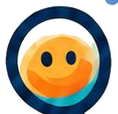
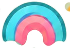
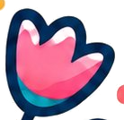
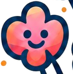
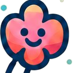
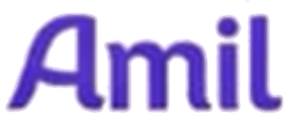

Clínica Cajeow Desenvolvimento Humano
Onde cada história encontra um solo fértil para crescer e se desenvolver.
Psicologia, Fonoaudiologia e Avaliação Neuropsicológica para crianças, adolescentes e adultos, em Vila Yara, Osasco.
Atendemos pelos planos Amil e Hapvida NotreDame Intermédica, e também de forma particular, com reembolso.

Conheça a Cajeow
Escolha um tema para ver o conteúdo completo.
A clínica
Nossa essência, quem está à frente, os pilares e o espaço.
AbrirEspecialidades
Psicologia, Fonoaudiologia e Avaliação Neuropsicológica, em detalhe.
AbrirJornada do paciente
Do primeiro contato ao acompanhamento, etapa por etapa.
AbrirGuia de desenvolvimento infantil
Roteiro gratuito de observação baseado em protocolos técnicos, com resumo em PDF.
AbrirConvênios
Planos atendidos, atendimento particular e reembolso.
AbrirAvaliações das famílias
O que as famílias dizem no Google.
AbrirDúvidas
Perguntas frequentes e um espaço para contar a sua situação.
AbrirOnde estamos
Endereço, horários, mapa e visita à clínica.
AbrirConheça o espaço
Ambientes pensados para receber cada paciente e a sua família.
Ser um solo fértil é oferecer acolhimento, conhecimento, segurança e cuidado para que cada pessoa cresça à sua maneira.
Camila Gomes, psicóloga infantojuvenil e responsável técnica da clínica (CRP 06/147376).
A clínica
A Clínica Cajeow Desenvolvimento Humano promove o cuidado interdisciplinar, ético e singular, valorizando cada pessoa em sua totalidade e fortalecendo suas potencialidades.
Nossa essência
Onde cada história encontra um solo fértil para crescer e se desenvolver.
Essa é a essência do nosso cuidado: acolher com humanização, escutar com sensibilidade e respeitar a singularidade e a diversidade. Com atuação baseada em evidências, fortalecemos o potencial de cada pessoa.
O público da clínica sempre foi o infantil, sem deixar de atender adolescentes e adultos. Cada pessoa tem a sua história, as suas necessidades, as suas dificuldades e o seu próprio tempo de desenvolvimento, e é por isso que o nosso trabalho começa pela escuta.
Quem está à frente
Camila Gomes é psicóloga infantojuvenil e responde tecnicamente pela clínica, com registro no Conselho Regional de Psicologia. Ela conduz a equipe sob os mesmos princípios que orientam todos os atendimentos: acolher, respeitar a individualidade e trabalhar com ética e responsabilidade.
A responsabilidade técnica formalizada em Psicologia é a base de um cuidado seguro, com governança clínica clara e processos registrados.
Nossos pilares
- Acolhimento
- Um ambiente seguro, humano e respeitoso, em que o paciente e a família se sentem ouvidos desde o primeiro contato.
- Individualidade
- Enxergamos a pessoa para além do diagnóstico, com planos construídos a partir da história e do ritmo de cada um.
- Ética e responsabilidade
- Cuidado técnico dentro das competências de cada profissão, com sigilo, registro e atuação baseada em evidências.
- Integração
- As especialidades trabalham de forma integrada, e a família é parte ativa do processo terapêutico.
- Evolução
- Buscamos autonomia, funcionalidade e qualidade de vida, com a evolução acompanhada e reavaliada periodicamente.
Compromisso técnico
O acompanhamento não é um atendimento pontual, e sim um percurso terapêutico com início, método e critérios de reavaliação definidos.
- Avaliação inicial estruturada
- Cada caso começa por uma compreensão organizada da história, das queixas e das necessidades do paciente.
- Plano terapêutico individualizado
- Metas definidas com o paciente e a família, de acordo com a demanda de cada um.
- Reavaliações clínicas periódicas
- A evolução é revista de tempos em tempos, e a frequência e as intervenções são ajustadas quando necessário.
- Instrumentos padronizados
- Uso de instrumentos de avaliação padronizados para acompanhar a evolução de forma objetiva.
- Registro e prontuário
- Prontuário e registros de evolução garantem rastreabilidade do cuidado prestado a cada paciente.
Conheça o espaço
Recepção, área de espera, sala infantil e consultórios.
Especialidades
Cuidado interdisciplinar, com cada profissional atuando na sua área e com autonomia técnica. Escolha uma especialidade para conhecer em detalhe como funciona.
Quem atendemos
Crianças
O foco histórico da clínica. Sala infantil com jogos, livros e recursos lúdicos, e participação da família no processo.
Adolescentes
Um espaço de escuta respeitosa para uma fase de muitas mudanças, com diálogo com a família quando necessário.
Adultos
Psicologia, Fonoaudiologia e Avaliação Neuropsicológica para quem busca compreender e cuidar do próprio funcionamento.
Demandas que acompanhamos
Desenvolvimento e comunicação
- Atrasos de linguagem
- Dificuldades de comunicação
- Atenção e hiperatividade (TDAH)
- Apoio ao neurodesenvolvimento
Aprendizagem e cognição
- Dificuldades escolares
- Atenção e memória
- Leitura e escrita
- Funções executivas
Emocional e comportamental
- Ansiedade
- Depressão
- Autoestima
- Comportamento
- Luto e mudanças de vida
Esta lista mostra o tipo de demanda que acompanhamos e não substitui uma avaliação. O diagnóstico é feito por profissional habilitado, depois de avaliação adequada. Não é preciso ter diagnóstico para começar.
Psicologia e Psicoterapia
Psicoterapia para crianças, adolescentes e adultos, conduzida por psicólogos com registro no CRP, com atuação baseada em evidências e participação da família no processo.
Definição
A psicoterapia é um processo estruturado de escuta e intervenção para compreender e lidar com questões emocionais, comportamentais e de desenvolvimento. O foco está em fortalecer recursos da pessoa, ampliar a sua autonomia e melhorar a sua qualidade de vida.
Na Cajeow, não se trata de um atendimento pontual: é um percurso com início, método e critérios de reavaliação definidos, registrado em prontuário e conduzido sob responsabilidade técnica em Psicologia.
Para quem
Crianças
O atendimento usa jogos, livros, desenhos e brincadeiras, que são a forma natural de a criança se expressar. Os responsáveis recebem orientações para apoiar o desenvolvimento no dia a dia.
Adolescentes
Um espaço de escuta respeitoso e sigiloso, dentro dos limites éticos da profissão, com diálogo com a família quando isso ajuda o processo.
Adultos
Acompanhamento de questões emocionais, relacionais e de rotina, com objetivos definidos junto com o paciente.
Quando procurar
Ansiedade e medos
Preocupação excessiva, medo, tensão ou dificuldade de relaxar.
Tristeza e desânimo
Tristeza persistente, perda de interesse ou de energia.
Comportamento
Dificuldades de regulação emocional, irritabilidade e limites.
Relações e socialização
Dificuldades para fazer amigos, conviver e se expressar.
Mudanças e perdas
Luto, separação, troca de escola e outras transições.
Vida escolar
Dificuldades escolares com componente emocional.
Não é necessário ter diagnóstico ou encaminhamento para a primeira conversa.
Como trabalhamos
- Acolhimento e anamneseEscuta da história, das queixas e do contexto do paciente e da família.
- Avaliação inicial estruturadaOrganização das informações para compreender o ponto de partida e as necessidades de cada caso.
- Plano terapêutico individualizadoObjetivos e metas definidos com o paciente e a família.
- Sessões regularesAtendimento com registro de evolução em prontuário e acompanhamento de frequência.
- Reavaliações periódicasRevisão das metas, com ajuste da frequência e das estratégias, usando instrumentos padronizados quando indicado.
- Devolutivas e encaminhamentosRetorno periódico à família sobre os marcos atingidos e encaminhamento a outros profissionais quando necessário.
A família no processo
Metas compartilhadas
A família é integrada ao plano terapêutico desde o início, com metas compartilhadas e reavaliadas.
Orientação aos cuidadores
Estratégias terapêuticas que podem ser replicadas em casa, para que o ganho se sustente fora da clínica.
Comunicação de evolução
Retornos periódicos sobre o andamento do acompanhamento.
Ética e sigilo
O atendimento segue o Código de Ética Profissional do Psicólogo, incluindo o sigilo profissional.
Perguntas frequentes
Preciso de laudo ou encaminhamento para começar?
Não para a primeira conversa. A equipe entende a demanda e indica o melhor caminho. Se já houver laudos ou relatórios anteriores, eles ajudam e podem ser trazidos.
Quanto tempo dura o acompanhamento?
Depende de cada pessoa. O plano é revisto periodicamente, e a frequência é ajustada conforme a evolução do paciente e o engajamento da família.
Os pais participam das sessões infantis?
A família participa do processo por meio de orientações, metas compartilhadas e devolutivas. O formato de cada encontro é definido pelo profissional, de acordo com a idade e as necessidades da criança.
A clínica atende adultos e adolescentes?
Sim. O público histórico é o infantil, mas atendemos adolescentes e adultos.
Fonoaudiologia
Cuidado com a comunicação humana: linguagem oral e escrita, fala e interação. Os atendimentos acontecem em uma sala exclusiva de Fonoaudiologia, com recursos adequados para cada idade.
Definição
A Fonoaudiologia avalia e acompanha o desenvolvimento e as dificuldades da comunicação. Comunicar-se envolve entender o que os outros dizem, expressar ideias, produzir os sons da fala e, mais tarde, ler e escrever.
O trabalho é individualizado: parte de uma avaliação cuidadosa, define objetivos próprios para cada paciente e envolve a família, que recebe orientações para estimular a comunicação em casa.
Áreas de atuação
Linguagem oral
Compreensão e expressão: vocabulário, frases, narrativa e uso da linguagem na conversa.
Fala e articulação
Produção dos sons da fala, trocas ou omissões de sons e inteligibilidade, isto é, o quanto os outros entendem o que a pessoa diz.
Comunicação e interação
Intenção comunicativa, gestos, contato visual e brincadeira compartilhada.
Linguagem escrita
Apoio às dificuldades de leitura e de escrita, em articulação com a escola quando necessário.
Sinais que merecem atenção
Primeiros anos
Pouca vocalização ou poucas palavras para a idade, pouca resposta quando é chamado pelo nome, dificuldade em entender pedidos simples.
Pré-escola
Fala difícil de ser entendida por pessoas de fora da família, trocas frequentes de sons, frases curtas ou desorganizadas.
Idade escolar
Dificuldades na leitura e na escrita, troca de letras, dificuldade de compreender e contar histórias.
Adolescentes e adultos
Dificuldades persistentes de comunicação, de fala ou de linguagem que atrapalham os estudos, o trabalho ou a vida social.
Como trabalhamos
- Entrevista com a famíliaHistórico do desenvolvimento, queixas, rotina e expectativas.
- Avaliação fonoaudiológicaObservação da comunicação do paciente, com atividades lúdicas no caso das crianças.
- Plano de intervençãoObjetivos definidos a partir das necessidades de cada pessoa.
- SessõesAtendimento na sala exclusiva de Fonoaudiologia, com registro de evolução.
- Orientação à famíliaEstratégias para estimular a comunicação em casa e no dia a dia.
- Reavaliação e encaminhamentosRevisão periódica das metas e, quando necessário, encaminhamento a outros profissionais.
Perguntas frequentes
Meu filho fala pouco. Devo esperar ele "destravar"?
Cada criança tem o seu ritmo, mas esperar sem avaliar pode atrasar o apoio. Se você tem dúvidas, uma avaliação fonoaudiológica ajuda a saber se é variação normal do desenvolvimento ou se vale iniciar o acompanhamento.
A Fonoaudiologia atende adultos?
Sim. A clínica atende crianças, adolescentes e adultos, com objetivos definidos a partir da avaliação de cada pessoa.
A família precisa acompanhar as sessões?
A família participa do processo, com orientações e devolutivas. O formato de cada sessão é definido pela fonoaudióloga, conforme a idade e o objetivo.
Avaliação Neuropsicológica
Investigação do funcionamento cognitivo, comportamental e emocional por meio de entrevistas, observação e instrumentos padronizados, com relatório escrito e devolutiva. Atendemos todas as faixas etárias.
Definição
A avaliação neuropsicológica é um processo estruturado que estuda como a pessoa pensa, aprende, lembra, presta atenção e lida com as emoções. Ela identifica pontos fortes e dificuldades e orienta os próximos passos.
Não é um tratamento, e sim uma investigação. Seus resultados contribuem para a compreensão de um quadro, mas o diagnóstico é construído em conjunto com outros profissionais, como médicos e demais especialistas que acompanham o paciente.
A avaliação atende o público de todas as faixas etárias, com instrumentos e atividades adequados a cada idade.
Funções investigadas
Atenção
Capacidade de manter o foco, de selecionar o que é importante e de alternar entre tarefas.
Memória
Aprender, guardar e recuperar informações, verbais e visuais.
Linguagem
Compreensão e expressão, vocabulário e organização do discurso.
Raciocínio
Resolução de problemas, planejamento e flexibilidade de pensamento.
Funções executivas
Organização, controle de impulsos e capacidade de planejar e concluir tarefas.
Aprendizagem
Habilidades de leitura, escrita e matemática e o modo como a pessoa aprende.
Humor e comportamento
Aspectos emocionais e comportamentais que influenciam o desempenho no dia a dia.
Quando procurar
Como é o processo
- Entrevista inicialConversa detalhada sobre a história de desenvolvimento, a queixa, a saúde e a rotina escolar ou profissional.
- Coleta de informações complementaresRelatórios anteriores, informações da escola e de outros profissionais, quando necessário.
- Sessões de avaliaçãoAplicação de testes e atividades padronizados, escolhidos de acordo com o objetivo da avaliação.
- Correção e análiseIntegração dos resultados com a história e a observação do paciente.
- Relatório escritoDocumento com os resultados, a interpretação e as recomendações.
- DevolutivaEncontro para explicar os resultados com clareza, orientar a família e a escola e indicar encaminhamentos.
Como se preparar
- Leve relatórios, laudos e avaliações anteriores, se houver.
- Leve boletins ou relatórios da escola, no caso de crianças e adolescentes.
- Informe os medicamentos em uso e outros acompanhamentos de saúde.
- Procure garantir uma boa noite de sono e uma alimentação leve antes das sessões.
- Quem usa óculos ou aparelho auditivo deve levá-los.
Perguntas frequentes
Para quais idades a avaliação é indicada?
Para todas as faixas etárias: crianças, adolescentes, adultos e idosos. Os instrumentos e as atividades são escolhidos de acordo com a idade e o objetivo da avaliação.
A avaliação neuropsicológica dá um diagnóstico?
Ela traz dados importantes para a compreensão do quadro, mas o diagnóstico é feito em conjunto com outros profissionais de saúde, a partir de todas as informações reunidas.
Meu filho vai ser "testado"? Isso causa ansiedade?
As atividades são apresentadas de forma adequada à idade, e o profissional cuida do vínculo e do ritmo da criança. A avaliação não é uma prova de "aprovado ou reprovado".
O que acontece depois do relatório?
Na devolutiva, explicamos os resultados e as recomendações. Quando indicado, orientamos o encaminhamento para acompanhamento psicológico, fonoaudiológico, médico ou escolar.
Do primeiro contato ao acompanhamento
Conheça o caminho do paciente na Cajeow: seis etapas, com responsabilidades claras e a família presente em cada uma delas.
- 1
Primeiro contato
Você fala com a nossa equipe pelo WhatsApp ou pelo site. Explicamos as especialidades, as formas de atendimento e os próximos passos.
Participam: família e equipe de acolhimento - 2
Agendamento
Escolhemos juntos o profissional, o dia e o horário, de acordo com a demanda e com a forma de atendimento: particular, reembolso ou convênio.
Participam: família e equipe de agendamento - 3
Acolhimento e anamnese
Na primeira conversa, o profissional escuta a história, as queixas e o contexto do paciente e da família.
Participam: paciente, família e profissional - 4
Avaliação inicial e objetivos
A partir da avaliação inicial, definimos os objetivos terapêuticos e o plano individualizado, com a participação da família.
Participam: profissional, paciente e família - 5
Acompanhamento
Sessões com registro de evolução em prontuário e controle de frequência, com orientações para dar continuidade ao cuidado em casa.
Participam: profissional e família - 6
Reavaliação e devolutivas
Revisão periódica das metas, retornos à família, ajuste da frequência e das intervenções e encaminhamentos quando necessário. Quando o caso pede, os profissionais conversam entre si.
Participam: equipe multiprofissional e família
Parceria família e clínica
Corresponsabilização estruturada
Família integrada ao plano terapêutico desde a admissão, com metas compartilhadas e reavaliadas.
Orientação e capacitação
Cuidadores orientados a replicar estratégias terapêuticas no ambiente doméstico.
Generalização no cotidiano
O ganho terapêutico se sustenta fora da clínica, fortalecendo a autonomia do paciente.
Comunicação de evolução
Retorno periódico à família sobre os marcos atingidos ao longo do acompanhamento.
Atendemos também por planos de saúde
Além do atendimento particular, com possibilidade de reembolso, a Cajeow atende pelos planos Amil e Hapvida NotreDame Intermédica. Veja abaixo como funciona cada forma de atendimento.
Atualmente, atendemos pelos seguintes planos de saúde
Especialidades por modalidade de atendimento
Como funciona a adesão
Etapas gerais. A equipe confirma as regras específicas de cada plano.
Fale com a equipe
Informe o plano, a especialidade e quem será atendido, pelo site ou pelo WhatsApp.
Conferência de cobertura
A equipe confirma a cobertura do seu plano e os documentos necessários, como pedido médico, quando exigido.
Agendamento
Escolhemos o profissional, o dia e o horário de atendimento.
Início do acompanhamento
Primeiro atendimento, com acolhimento e definição dos objetivos.
Não encontrou o seu plano?
A clínica também atende de forma particular, com possibilidade de reembolso junto ao seu plano, conforme as regras do seu contrato. Fale com a nossa equipe para saber como podemos atender a sua família.
Conheça as nossas condições
Atendimento particular, com possibilidade de reembolso, e pelos planos Amil e Hapvida NotreDame Intermédica. Conte o que você procura e a equipe explica como funciona para o seu caso.
Guia de desenvolvimento infantil
Responda 10 perguntas gerais sobre o dia a dia da criança e receba um resumo de observação em PDF. As perguntas se baseiam nos marcos do CDC/Academia Americana de Pediatria (2022), na tradução da Sociedade Brasileira de Pediatria e na Caderneta da Criança do Ministério da Saúde.
Esta ferramenta é educativa e de observação. Não é triagem, avaliação, anamnese nem diagnóstico, e não substitui instrumentos padronizados e validados (como ASQ-3 ou Denver II), aplicados por profissionais, nem a avaliação de um médico.
O que as famílias dizem
Avaliações de quem já foi atendido, publicadas no Google. Você também pode contar como foi a sua experiência.
Dúvidas
Conte a sua situação e a sua dúvida. Nossa equipe lê com atenção e entra em contato com você.
Perguntas frequentes
Preciso ter um diagnóstico para começar?
Não. Na primeira conversa entendemos a demanda e indicamos a especialidade mais adequada. Alguns planos de saúde podem pedir encaminhamento médico, então vale confirmar com a nossa equipe.
Quais convênios vocês atendem?
Amil e Hapvida NotreDame Intermédica. Também atendemos como particular, com possibilidade de reembolso. Veja as especialidades de cada forma de atendimento na página de Convênios.
Como funciona o reembolso?
No atendimento particular, você pode solicitar o reembolso ao seu plano conforme as regras do seu contrato. Fale com a nossa equipe para saber os documentos que podemos fornecer.
A família participa do atendimento?
Sim. Nos atendimentos infantis, a família é parte ativa do processo, com orientações, metas compartilhadas e retornos periódicos sobre a evolução.
Tem estacionamento e acessibilidade?
Sim. A clínica fica no Pátio Osasco Open Mall, na Torre Santorini, e conta com estacionamento e acessibilidade.
Qual é o horário de atendimento?
De segunda a sexta, das 8h às 19h, e aos sábados, das 8h às 12h30.
Conte a sua situação
Leva cerca de dois minutos.
Onde estamos
Vila Yara, Osasco, com acesso pelas avenidas dos Autonomistas e Franz Voegeli e pelas Marginais.
Avenida dos Autonomistas, 896
Torre Santorini, salas 1103 e 1903
Vila Yara, Osasco/SP · CEP 06020-010
Estacionamento e acessibilidade.
Agende uma visita
Conheça a recepção, as salas e a equipe antes de começar.
Trabalhe conosco
Profissional de saúde que quer fazer parte da equipe? Envie o seu contato e o seu currículo.